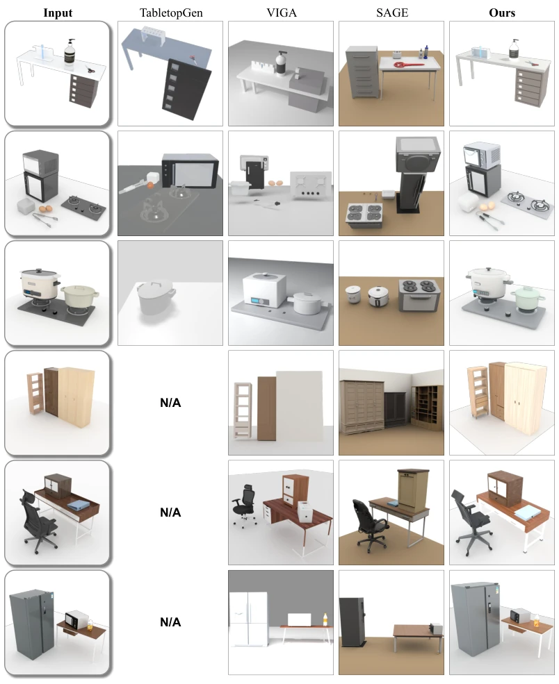
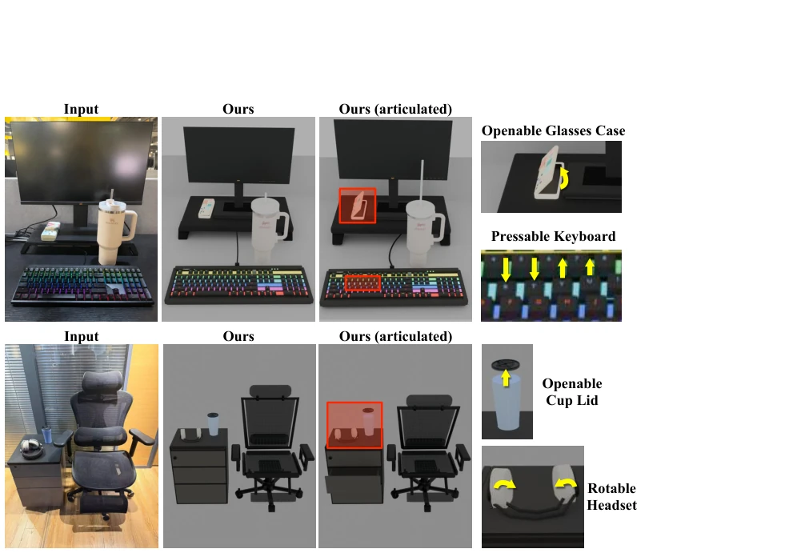
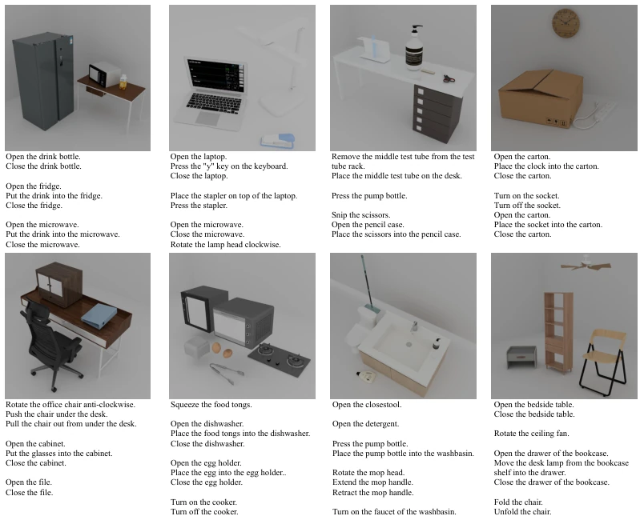

Figure 1: Demonstration of NeoWorld-Pro. Our framework ensures simulation-readiness by optimizing: (a-b) physically plausible intra-object articulations under external forces, (c-d) stable inter-object spatial configurations, and (e-f) scene viability for assembly and manipulation tasks.
Figure 2: Overview of the pipeline. Given a monocular RGB image, NeoWorld-Pro first performs scene parsing and reasoning to establish a scene tree and layout. Each foreground object is then programmed into an executable Blender script to generate geometry and articulation. A two-level physics-in-the-loop mechanism ensures simulation-readiness: (1) an object-level loop for articulation and kinematic refinement, and (2) a scene-level loop based on CEM that optimizes scene plausibility, such as relative object scale and placement, collision-free spatial consistency, and stability.
Figure 3: Object-level reconstruction results of articulated assets. Compared with existing methods, NeoWorld-Pro recovers more faithful geometry, appearance, and articulation structure.

Figure 4: Qualitative scene reconstruction on our synthetic scene dataset. Each row compares reconstructions from the same monocular input. NeoWorld-Pro more faithfully preserves object iden- tity, relative scale and orientation, and inter-object layout across both tabletop and larger workspace scenes. “N/A” denotes examples outside TabletopGen’s tabletop setting.

Figure 5: Reconstruction from real-world images. The results illustrate generalization to real-world appearance and clutter while retaining functional articulations.
其他图片Other Figures

Figure 6: Examples of scenes and their corresponding manipulation tasks.